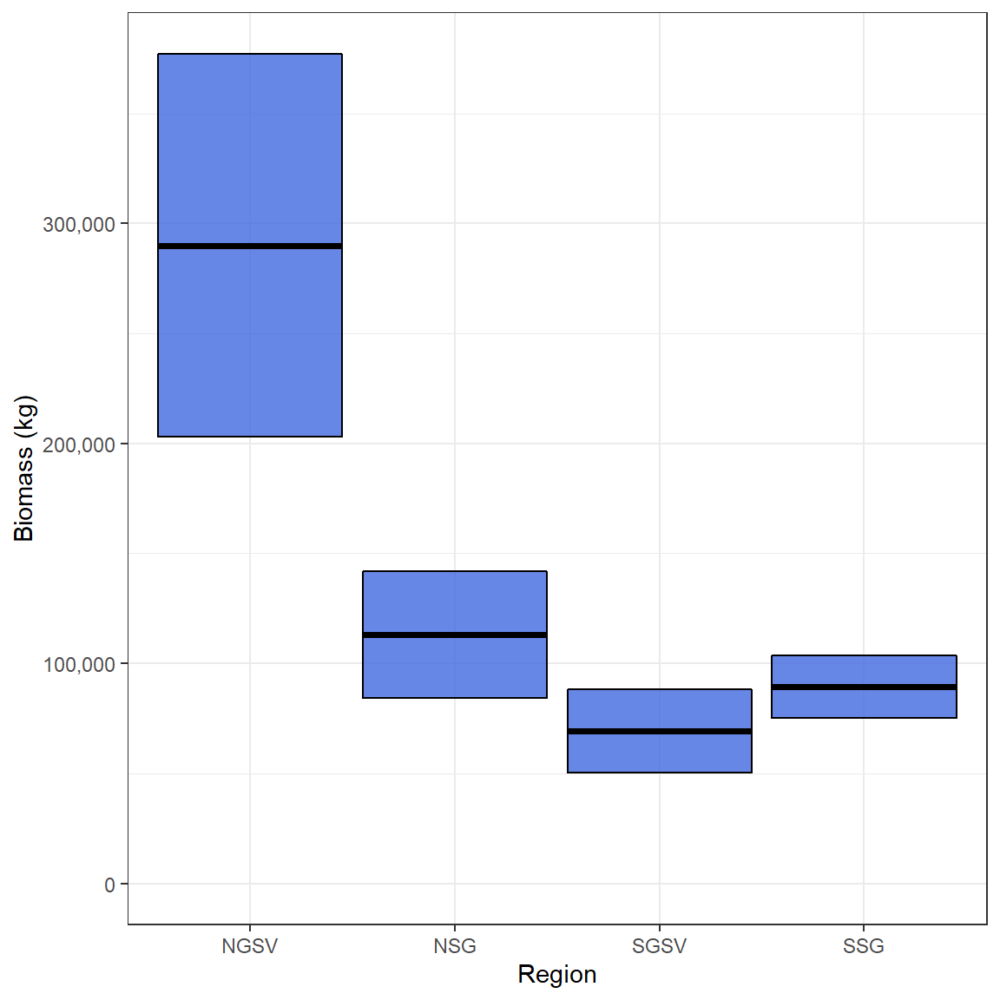

DEPMWt Estimation
Jonathan Smart
2020-02-10
Source:vignettes/DEPMWt_Estimation.Rmd
DEPMWt_Estimation.RmdLoad the DEPM and tidyverse libraries.
Introduction
A recent advancement in Daily Egg Production Methods (DEPM) is the development of the DEPMWt approach (McGarvey et al. in review ). This extends the traditional DEPM of Parker (1980; Lasker et al. 1985) by making explicit the dependence on body size of population numbers and fecundity of female fish. In place of overall means for body weight and batch fecundity, these DEPM inputs are broken down into weight bins. Accounting for the size-dependence of population structure and fecundity gives a more accurate description, notably when the population weight distribution is not normal or fecundity varies non-linearly.
A second modification of traditional DEPM incorporated into this package is a method to estimate the daily egg production, P0, using a stage-based approach (McGarvey et al. 2018). The simplifies the estimation of P0 with no lumping of egg stages into discrete daily cohorts, no assumption that all fish spawn at a fixed hour of each day, and no need to infer egg mortality by regression for each survey from the often very highly variable tow sample measures of egg density. But prior values of egg mortality rate are assumed. The DEPM package includes functions to estimate DEPM inputs using data from egg surveys and adult sampling, and their standard errors. Final estimates and their standard errors of spawning biomass and total number of female spawners are obtained under both the DEPMWt and traditional DEPM approaches, and of absolute female population numbers by weight class using DEPMWt. Here, an example application of the DEPMWt approach is given using data from South Australian snapper (Chrysophrys auratus).
Necessary data
Five datasets are required to use the DEPMWt approach:
- Egg density suvery sample data to estimate daily egg production (\(P_{0}\))
- Adult sex ratios to estimate R
- Female spawning fractions to estimate S
- Female total weights to estimate the proportion of females in each weight bin (\(p_{w}^{\text{N}}\))
- Female total weight and batch fecundities to determine a fecundity-at-weight relationship (\(F_{wt}\))
Spawning area (A) is not calculated as part of this package but its estimates will be included as one of the final steps.
DEPMWt parameter estimation
Daily egg production (\(P_{0}\))
Daily egg production is estimated using a stage-based estimator (McGarvey et al. 2018) via the function Estimate_P0() which requires a dataset that has been formatted as such:
# egg density structure
str(egg_data)
#> 'data.frame': 2961 obs. of 6 variables:
#> $ Region : Factor w/ 4 levels "NGSV","NSG","SGSV",..: 1 1 1 1 1 1 1 1 1 1 ...
#> $ Site : Factor w/ 329 levels "GV18_005","GV18_006",..: 1 2 3 4 5 6 7 8 9 10 ...
#> $ Stage_num: num 1 1 1 1 1 1 1 1 1 1 ...
#> $ Density : num 0 0 0 0 0 0 0 0 0 0 ...
#> $ Age : num 0.178 0.173 0.17 0.173 0.188 ...
#> $ Hatch : num 1.3 1.26 1.24 1.26 1.36 ...
# egg density head()
head(egg_data)
#> Region Site Stage_num Density Age Hatch
#> 1 NGSV GV18_005 1 0 0.1782736 1.295414
#> 2 NGSV GV18_006 1 0 0.1730048 1.257129
#> 3 NGSV GV18_007 1 0 0.1701226 1.236185
#> 4 NGSV GV18_008 1 0 0.1727973 1.255621
#> 5 NGSV GV18_013 1 0 0.1877140 1.364012
#> 6 NGSV GV18_014 1 0 0.1839234 1.336468This dataset is in a long format where every row is a density estimate of the eggs in each stage of each sample. This dataset contains several columns that must include:
- Site - which represents each sample in the data (i.e. one plankton tow a location). It’s variable name must be specified as an argument using
site = - Density - the number of eggs in a single development stage in a metre cubed of seawater. The function will automatically determine the density column based on similar names (i.e. dens, density, DENSITY or other similar names). However, there cannot be multiple density columns.
- Age - the age in days of each egg stage in each sample. The function will automatically determine the Age column based on similar names in a similar manner to the
Densityvariable - Hatching time - The age in days where the eggs in each sample are estimated to hatch (usually differs based on temperature). The function will automatically determine the
Hatchcolumn based on similar names in a similar manner to theDensityvariable - Z - a pre-specified level of egg mortality used to determine \(P_{0}\). Multiple values can be provided to simultaneously determine different values of \(P_{0}\) based on this parameter. Instruction on how to do this and how to perform sensitivity tests are provided in the final section of this vignette.
Additional columns can be included in the dataset, so the user does not need to remove variables that could be useful to them later on. For example, in the egg_data dataset, the Stage_num variable represents the development stage of each density estimate in each sample. However as each row of this dataset is a different observation, this variable is not needed by the function.
The function also has the ability to break the data down spatially and temporaly. If the Region and Time arguments are not used then \(P_{0}\) will be estimated using all of the data. If you provide either Region or Time then a \(P_{0}\) will be returned for each Region/Time combination. Therefore, a time series of data can analysed in a single function call. Here is an example using 4 DEPM surveys conducted in different areas but in the same year. The results are returned as a dataframe where each row is a survey and the estimate, standard error and specified mortality are returned.
Spawning fraction (S)
Spawning fraction is estimated using the function Estimate_Spawning_fraction() which requires a dataset that has been formatted as two columns: 1) the number of females in spawning condition and 2)the total number of females. Each row represents a sample and the spawning fraction is estimated using a ratio estimator.
The correct columns in the dataset will be detected by the function. The column with the total number of females should be called “Total”, “Tot” or something similar. The column with the number of spawning females can include the term “spawn” or “yes” depending on how your dataset is setup. Ours is named “yes” as we had a “yes” or “no” designation for spawning fish.
str(S_data)
#> 'data.frame': 20 obs. of 3 variables:
#> $ yes : int 1 16 9 5 3 2 1 2 4 5 ...
#> $ no : int 6 2 1 4 2 1 2 4 2 1 ...
#> $ Total: int 7 18 10 9 5 3 3 6 6 6 ...
head(S_data)
#> yes no Total
#> 1 1 6 7
#> 2 16 2 18
#> 3 9 1 10
#> 4 5 4 9
#> 5 3 2 5
#> 6 2 1 3Similar to other functions, specifying the Region or Time argument with relevant column names will group the estimates according to specific surveys. However, here an example is given without a region or time grouping. The results are returned as a dataframe with the estimate, its variance, the standard error and its CV. Each row represents a survey.
Sex Ratio (R)
Sex ratio is estimated using the function Estimate_sex_ratio() which requires a dataset that has been formatted to include the weight of males and females along with Region/Time variables. Each row represents a sample and the sex ratio is estimated using a ratio estimator in the same manner as spawning fraction. The same Region/Time break down can be applied and Region is available in this dataset. The results returned are the same format as Estimate_Spawning_fraction().
head(R_data)
#> Sample.code Year Region F M Total
#> 1 ST12/1801B18-Dec-18 2018 NGSV 2.45000 6.42500 8.87500
#> 2 ZA12/1801B19-Dec-18 2018 NGSV 11.54800 10.83200 22.38000
#> 3 DC12/1801B11-Dec-18 2018 NSG 8.95600 16.22400 25.18000
#> 4 SA12/1801B12-Dec-18 2018 NSG 2.94000 7.18500 10.12500
#> 5 GLLOYD16-Dec-18 2018 SGSV 43.33143 51.11838 94.44980
#> 6 GLLOYD17-Dec-18 2018 SGSV 20.28760 16.20903 36.49663
sex_ratio_results <- Estimate_sex_ratio(R_data, Region = "Region")
sex_ratio_results
#> Region Ratio estimate Variance SE CV
#> 1 NGSV 0.4478643 0.0095201654 0.09757133 0.21785913
#> 2 NSG 0.3369494 0.0007137716 0.02671650 0.07928936
#> 3 SGSV 0.3939694 0.0011661437 0.03414885 0.08667892
#> 4 SSG 0.5741385 0.0018484630 0.04299376 0.07488394Female weight data
The key difference between the DEPMWt approach and the traditional DEPM is how female weight and fecundity are handled. In the DEPMWt approach, female weight is broken into discrete weight bins and their variance is described using a multinomial distribution. This is handled by the Estimate_proportion_female() function which requires a dataframe of total female weight. This dataframe only needs one column but this does not need to be subset from a larger dataset as the column is specified by the Weight argument. Other columns are ignored unless (like other parameter functions), a Region or Time argument is specified.
To break the female weights into bins, an upper bound and a bin width is required. In this example, 27 weight bins are applied for Snapper beginning at zero and ending at 13500g in 500g bins.
NOTE: Weight data must be Total Weight in grams
head(Wt_data)
#> Region CFL Tot.Wt
#> 1 NSG 627 4002.11
#> 2 NSG 657 4551.52
#> 3 NSG 610 3710.49
#> 4 NSG 693 5271.38
#> 5 NSG 593 3432.78
#> 6 NSG 557 2889.23
Prop_fem_results <- Estimate_proportion_female(Wt_data,
Weight = "Tot.Wt",
max.weight = 13500,
bin.width = 500,
Region = "Region")The returned results are the weight bin number (not the weight of the bin), sample size, proportion of females in each bin and the multinomial variance of the bins. Here Region is specified so these values are grouped according.
The proportions of females in each weight bin and their standard deviations (calculated from the variances) demonstrate how this data is not normally distributed. Therefore, this is now explicitly included in the biomass estimates along with much more precise estimates of variance.
head(Prop_fem_results)
#> # A tibble: 6 x 5
#> # Groups: Region [4]
#> Region Wt_bin n Prop Prop_var
#> <fct> <int> <dbl> <dbl> <dbl>
#> 1 NGSV 1 8 0.0392 0.000185
#> 2 NSG 1 6 0.0392 0.000246
#> 3 SGSV 1 3 0.024 0.000187
#> 4 SSG 1 14 0.194 0.00218
#> 5 NGSV 2 25 0.123 0.000527
#> 6 NSG 2 44 0.288 0.00134
ggplot(Prop_fem_results,
aes(Wt_bin, Prop, ymin = Prop-sqrt(Prop_var), ymax = Prop + sqrt(Prop_var)))+
geom_col()+
geom_errorbar()+
facet_wrap(~Region)+
theme_bw()Fecundity-at-weight
As weight is no longer expressed as a mean and variance, fecundity must follow suit. Therefore, the fecundity at each weight bin must now be calculated using the the Estimate_Batch_Fecundity() function. This function is quite useful as it can return three sets of outputs:
- A dataframe of parameters and their variances for the relationship (these can also be printed to the screen) by setting
return.parameters = TRUE. - A dataframe with the predicted fecundity for each weight along with SD and 95% confidence intervals
- A dataframe with the predicted fecundity at specified weights and their variance. By providing the mid-points of weight bins, this will return the fecundity-at-weight for each bin and becomes the new inputs for estimating biomass.
The batch fecundity relationship estimator uses an allometric relationship which allows for wider variance with larger weights. Therefore, there are four parameters returned, alpha, beta and two sigma parameters that determine how variance changes with weight. A dataframe with two columns must be provided that includes Total weight in grams and the number of eggs for that fish. The function will determine which is which based on their scales (number of eggs > Wt in grams). A set of starting parameters are required and are provided to the start_pars argument as a list. The estimated parameters are printed to the screen if verbose = TRUE.
head(fecundity_data_TotWT)
#> Total_Wt batch_fecund
#> 1 5725 394035.7
#> 2 7080 309483.9
#> 3 7870 494000.0
#> 4 5635 371710.5
#> 5 8000 626406.2
#> 6 8975 570789.5
# List of starting parameters for the batch fecundity estimator
parameters <- list( alpha= 110, beta = 0.85 , Sigma0 = 10.5, Sigma1 = 0.7)
# Return parameters
Estimate_Batch_Fecundity(fecundity_data_TotWT,
start_pars = parameters,
fixed.pars = c("Sigma1", "beta"),
return.parameters = TRUE)
#> Parameter Val var
#> 1 alpha 118.1105923 5.27749586
#> 2 beta 0.9215988 0.05831527
#> 3 Sigma0 11.0283990 0.82902584
#> 4 Sigma1 0.7440693 0.08894361
# Return batch fecundity estimates
Batch_fecundity_relationship <- Estimate_Batch_Fecundity(fecundity_data_TotWT,
fixed.pars = c("Sigma1", "beta"),
start_pars = parameters, verbose = FALSE)
#plot of relationship
ggplot(Batch_fecundity_relationship, aes(Wt, y = Predicted, ymin = low, ymax = upp))+
geom_ribbon( alpha = .3)+
scale_y_continuous(labels = scales::comma)+
geom_point(aes(y = Fecundity), alpha = .3)+
geom_line(aes(y = Predicted), col = "royalblue", size = 1) +
theme_bw()In order to determine the fecundity for each weight bin, the mid-points of those bins are provided to the predition.int argument as a vector. A dataframe is then returned with the weight bin mid point, the estimate of fecundity at that weight and its variance and SE.
# The mid points of each weight bin need to be used to estimate fecundity.
mid_points <- seq(250, 13500, 500)
# Estimates for biomass calculation
fecundity_at_Wtbins <- Estimate_Batch_Fecundity(fecundity_data_TotWT,
start_pars = parameters,
fixed.pars = c("Sigma1", "beta"),
prediction.int = mid_points,
verbose = FALSE)
head(fecundity_at_Wtbins)
#> Wt Fecundity Var SE
#> 1 250 19152.59 732374.3 855.7887
#> 2 750 52715.93 5548324.2 2355.4881
#> 3 1250 84410.68 14225675.9 3771.6940
#> 4 1750 115098.28 26449395.8 5142.8976
#> 5 2250 145096.27 42033018.6 6483.2876
#> 6 2750 174571.66 60845095.1 7800.3266This function can also automatically estimate batch fecundity by allowing some of the parameters to be fixed. This is performed using the fixed.pars argument which requires a vector with the listed parameters to be fixed. Determining whether this is necessary is done by running the function and returning the parameters.
Estimate_Batch_Fecundity(fecundity_data_TotWT,
start_pars = parameters,
return.parameters = TRUE)
#> Parameter Val var
#> 1 alpha 118.1105923 57.97564446
#> 2 beta 0.9215988 0.05831767
#> 3 Sigma0 11.0284006 12.06341963
#> 4 Sigma1 0.7440693 0.08895222For South Australian Snapper, the variances of the alpha and Sigma0 parameters are clearly overestimated. The function fixes this by running the model twice; once with all four parameters estimated and then again with the fixed parameters (ones which were estimated correctly the first time) held at their estimates from the first model. For example:
Spawning Area (A)
Spawning area is the only DEPM parameter that is not estimated in this package as this is typically done using GIS methods. However, the Spawning area object can be created manually by taking another parameter object (P0, S or R are good choices) and using its Time/Region groupings to create new object. As this example has one survey from 4 regions in a single year, only the Region variable needs to be carried across. A new variable can then be added with the location in the correct order in that column. Spawning Area is a precise quantity and therefore does not require a variance. Note that spawning area must be in metres squared.
# Get Time/region combos from the P0 object
Area <- select(P0_results, Region)
Area$A <- c(2822201039, #NGSV
1884895030, # NSG
2285649237, # SGSV
3239913469) # SSG
head(Area)
#> # A tibble: 4 x 2
#> Region A
#> <fct> <dbl>
#> 1 NGSV 2822201039
#> 2 NSG 1884895030
#> 3 SGSV 2285649237
#> 4 SSG 3239913469Combining parameters as inputs for biomass estimation
With all of the parameters now available to calculate spawning stock biomass, these now need to be combined into a dataset that can be input into the Estimate_DEPMWt_biomass() function. For the DEPMWt approach, three objects are needed:
Combining non-weight bin parameter estimates
A dataframe of all of the parameter estimates can be assembled using combine_estimates() where each of the parameter objects are provided as arguments.
Adults_pars <- combine_estimates(P0 = P0_results, R = sex_ratio_results, S = Spawn_results, A = Area)
#> Joining, by = "Region"Joining, by = "Region"
Adults_pars
#> # A tibble: 4 x 6
#> Region P0 Z R A S
#> <fct> <dbl> <dbl> <dbl> <dbl> <dbl>
#> 1 NGSV 2.03 0.4 0.448 2822201039 0.722
#> 2 NSG 0.947 0.4 0.337 1884895030 0.722
#> 3 SGSV 0.527 0.4 0.394 2285649237 0.722
#> 4 SSG 0.725 0.4 0.574 3239913469 0.722Where a parameter is estimated as time invariant, it will be automatically allocated to all of the Region or Time groupings applied for the other parameters. Here this occurs for S. However, if a particular parameter is missing in one instance but is not time invariant, it will not be carried over and NA will be returned. In this situation, it will need to be inserted manually. For example, lets pretend that R is missing for “SSG”:
Combining non-weight bin parameter variances
Variance estimates are needed by Estimate_DEPMWt_biomass() in order to determine the precision of the biomass estimates. These are provided in the same fashion as the parameter estimates using combine_variances().
Adults_vars <- combine_variances(P0_results, R = sex_ratio_results, S = Spawn_results)
#> Joining, by = "Region"
Adults_vars
#> # A tibble: 4 x 5
#> Region P0 Z R S
#> <fct> <dbl> <dbl> <dbl> <dbl>
#> 1 NGSV 0.391 0.4 0.00952 0.00298
#> 2 NSG 0.218 0.4 0.000714 0.00298
#> 3 SGSV 0.129 0.4 0.00117 0.00298
#> 4 SSG 0.0849 0.4 0.00185 0.00298The same manual insertions can be performed on this object:
Combining proportion female and fecundity parameters
As the proportions of females and the fecundity at each weight bin have a different structure, they have their own function to combine them into a single object. Much like combine_estimates() and combine_variances(), this function is called combine_wt_class_estimates() and only requires these two dataframes which will be combined according to Region/Time groupings. Manually adjusting these results is not recomended.
weight_class_pars <- combine_wt_class_estimates(prop.fem.data = Prop_fem_results,
fecundity.data = fecundity_at_Wtbins)
head(weight_class_pars)
#> # A tibble: 6 x 9
#> # Groups: Region [4]
#> Region Wt_bin n Prop Prop_var Wt Fecundity Fec_var SE
#> <fct> <int> <dbl> <dbl> <dbl> <dbl> <dbl> <dbl> <dbl>
#> 1 NGSV 1 8 0.0392 0.000185 250 19153. 732374. 856.
#> 2 NSG 1 6 0.0392 0.000246 250 19153. 732374. 856.
#> 3 SGSV 1 3 0.024 0.000187 250 19153. 732374. 856.
#> 4 SSG 1 14 0.194 0.00218 250 19153. 732374. 856.
#> 5 NGSV 2 25 0.123 0.000527 750 52716. 5548324. 2355.
#> 6 NSG 2 44 0.288 0.00134 750 52716. 5548324. 2355.Spawning Stock Biomass Estimation
All of the hard work is done once all of the parameters and their variances have been estimated and organised. The final step is to combine them using Estimate_DEPMWt_biomass(). This function requires each of these objects and will return a list of results which include the spawning stock biomass, total number of females and the number of females in each weight bin.
# Estimate Biomass
Snapper_biomass_results <- Estimate_DEPMWt_biomass(adult.pars = Adults_pars,
adult.vars = Adults_vars,
weight.pars.vars = weight_class_pars)
# a list of three outputs is returned
Snapper_biomass_results$Biomass # biomass in kgs
#> Region Z Biomass SD
#> 1 NGSV 0.4 289973.33 87093.88
#> 2 NSG 0.4 113168.56 28878.45
#> 3 SGSV 0.4 69327.78 18819.85
#> 4 SSG 0.4 89575.40 14230.36
Snapper_biomass_results$Nfem # number of females
#> Region Z Nfem SD
#> 1 NGSV 0.4 36517.185 8098.135
#> 2 NSG 0.4 22204.411 5767.166
#> 3 SGSV 0.4 7322.527 2024.300
#> 4 SSG 0.4 25537.003 5277.711
head(Snapper_biomass_results$NfemWt) # number of females in each weight bin
#> Region Z Nwt NfemWt SD
#> 1 NGSV 0.4 1 1432.0465 587.7449
#> 2 NSG 0.4 1 870.7612 413.4323
#> 3 SGSV 0.4 1 175.7406 111.2097
#> 4 SSG 0.4 1 4965.5283 1545.6083
#> 5 NGSV 0.4 2 4475.1452 1282.9827
#> 6 NSG 0.4 2 6385.5821 1797.5190The list of dataframes returned from the function can then be saved and used for plotting
# Create new objects
Snapper_biomass <- Snapper_biomass_results$Biomass
Snapper_Nfem <- Snapper_biomass_results$Nfem
Snapper_NfemWt <- Snapper_biomass_results$NfemWtPlot biomass with 95% CIs
ggplot(Snapper_biomass, aes(Region,Biomass,
ymin = Biomass - SD,
ymax = Biomass + SD))+
geom_crossbar(fill = "royalblue", alpha = .8)+
expand_limits(y = 0)+
scale_y_continuous(name = "Biomass (kg)", labels = scales::comma, breaks = scales::pretty_breaks(5))+
theme_bw()
Plot total number of females
ggplot(Snapper_Nfem, aes(Region,Nfem,
ymin = Nfem - SD,
ymax = Nfem + SD))+
geom_crossbar(fill = "purple", alpha = .8)+
expand_limits(y = 0)+
scale_y_continuous(name = "Number of females", labels = scales::comma, breaks = scales::pretty_breaks(5))+
theme_bw()Plot number of females in each weight bin
#plot female weights
ggplot(Snapper_NfemWt,
aes(Nwt,NfemWt, ymin = NfemWt - SD,
ymax = NfemWt + SD))+
facet_wrap(~Region, ncol = 2)+
geom_col()+
geom_errorbar()+
expand_limits(y = 0)+
scale_y_continuous(name = "Number of females", labels = scales::comma)+
scale_x_continuous(name = "Weight class (g)",
breaks = scales::pretty_breaks(6),
labels = function(x){x * 500})+
theme_bw()+
theme(axis.text.x = element_text(angle = 90))Testing assumptions for pre-specified egg mortality (Z)
As the \(P_{0}\) estimation methods in this package require a specified level of egg mortality (Z) as piror input, it is sensible to test the sensitivities of the \(P_{0}\) estimates, as well as the DEPMWt results to different Z values. Testing different values of Z can be done by passing a vector of values to the z argument of Estimate_P0():
Multi_Z_P0_results <- Estimate_P0(data = egg_data,
site = "Site",
Region = "Region",
Z = c(.2, .4, .6))This will return a different \(P_{0}\) estimate for each value of Z for each Time/Region grouping:
Multi_Z_P0_results
#> Region P0 P0_se Z
#> 1 NGSV 1.7972317 0.35215150 0.2
#> 2 NSG 0.8400430 0.19454626 0.2
#> 3 SGSV 0.4600852 0.11248190 0.2
#> 4 SSG 0.6294788 0.07419926 0.2
#> 5 NGSV 2.0333120 0.39057148 0.4
#> 6 NSG 0.9472290 0.21775974 0.4
#> 7 SGSV 0.5268231 0.12938292 0.4
#> 8 SSG 0.7254297 0.08486910 0.4
#> 9 NGSV 2.3084189 0.43464390 0.6
#> 10 NSG 1.0709549 0.24423117 0.6
#> 11 SGSV 0.6061931 0.15043110 0.6
#> 12 SSG 0.8390163 0.09755602 0.6For South Australian Snapper, the resulting \(P_{0}\) estimates vary percentage-wise less than Z itself. McGarvey and Kinloch (2001) analytically demonstrated relatively low sensitivity of \(P_{0}\) and estimated spawning biomass to assumed Z.
Multi_Z_P0_results$Z <- as.factor(Multi_Z_P0_results$Z) # convert Z to a factor for easy plotting
ggplot(Multi_Z_P0_results, aes(Z, P0, ymin = P0 - P0_se, ymax = P0 + P0_se, fill = Z))+
geom_crossbar()+
facet_wrap(~Region, ncol = 2, scales = "free")+
scale_fill_viridis_d()+
theme_bw()
An object from Estimate_P0() with multiple Zs can be included in the biomass estimation procedure in the same manner as before. When multiple Zs are provided to combine_estimates() and combine_variances() they are treated as groupings and all other parameters will be aligned with them. When creating an object for spawning area A, care must be taken to only have unique Time/Region groupings. Using an object from Estimate_P0() with multiple Zs can erroneously add duplicates if you’re not careful. This will cause error messages.
# Make sure that Area has unique Time/Region breakdowns (Only Region used in this example)
Area <- data.frame(Region = unique(Multi_Z_P0_results$Region))
Area$A <- c(2822201039, #NGSV
1884895030, # NSG
2285649237, # SGSV
3239913469) # SSG
Multi_Z_adult_pars <- combine_estimates(P0 = Multi_Z_P0_results, R = sex_ratio_results, S = Spawn_results, A = Area)
#> Joining, by = "Region"Joining, by = "Region"
Multi_Z_adult_vars <- combine_variances(P0 = Multi_Z_P0_results, R = sex_ratio_results, S = Spawn_results)
#> Joining, by = "Region"A new object with Z as a grouping will now be produced which can be passed to the biomass estimation function.
Multi_Z_adult_pars
#> Region P0 Z R A S
#> 1 NGSV 1.7972317 0.2 0.4478643 2822201039 0.722488
#> 2 NSG 0.8400430 0.2 0.3369494 1884895030 0.722488
#> 3 SGSV 0.4600852 0.2 0.3939694 2285649237 0.722488
#> 4 SSG 0.6294788 0.2 0.5741385 3239913469 0.722488
#> 5 NGSV 2.0333120 0.4 0.4478643 2822201039 0.722488
#> 6 NSG 0.9472290 0.4 0.3369494 1884895030 0.722488
#> 7 SGSV 0.5268231 0.4 0.3939694 2285649237 0.722488
#> 8 SSG 0.7254297 0.4 0.5741385 3239913469 0.722488
#> 9 NGSV 2.3084189 0.6 0.4478643 2822201039 0.722488
#> 10 NSG 1.0709549 0.6 0.3369494 1884895030 0.722488
#> 11 SGSV 0.6061931 0.6 0.3939694 2285649237 0.722488
#> 12 SSG 0.8390163 0.6 0.5741385 3239913469 0.722488The weight_class_pars object created earlier does not need to incorporate the new Zs and can be provided straight to the function.
# Estimate Biomass
Snapper_biomass_results <- Estimate_DEPMWt_biomass(adult.pars = Multi_Z_adult_pars,
adult.vars = Multi_Z_adult_vars,
weight.pars.vars = weight_class_pars)
# Create new objects
Snapper_biomass <- Snapper_biomass_results$Biomass
Snapper_Nfem <- Snapper_biomass_results$Nfem
Snapper_NfemWt <- Snapper_biomass_results$NfemWtThese results can then be examined to determine how biomass is influenced by the specification of Z.
Snapper_biomass$Z <- as.factor(Snapper_biomass$Z) # convert Z to a factor for easy plotting
ggplot(Snapper_biomass, aes(Z,Biomass, fill = Z,
ymin = Biomass - SD,
ymax = Biomass + SD))+
geom_crossbar( alpha = .8)+
facet_wrap(~Region, ncol =2)+
scale_fill_viridis_d()+
expand_limits(y = 0)+
scale_y_continuous(name = "Biomass (kg)", labels = scales::comma, breaks = scales::pretty_breaks(5))+
theme_bw()References
Lasker, R. (Ed). 1985. An egg production method for estimating spawning biomass of pelagic fish: application to the northern anchovy, Engraulis mordax. NOAA Technical Report, Natl. Mar. Fish. Serv., 36. 99 pp.
McGarvey, R., and Kinloch, M. A. 2001. An analysis of the sensitivity of stock biomass estimates derived from the daily egg production method (DEPM) to uncertainty in egg mortality rates. Fisheries Research, 49(3): 303-307.
McGarvey, R., Steer, M. A., Smart, J. J., Matthews, D. J. and Matthews, J. M.(in review). Generalizing the Parker model equation of DEPM: incorporating size dependence of population numbers and batch fecundity
McGarvey, R., Steer, M.A., Matthews, J.M., Ward, T.M. (2018). A stage-based estimator of daily egg production. ICES J. Mar. Sci. 75(5), 1638-1646.
Parker, K. 1980. A direct method for estimating northern anchovy, Engraulis mordax, spawning biomass. . FIsheries Bulletin 78:541-544.